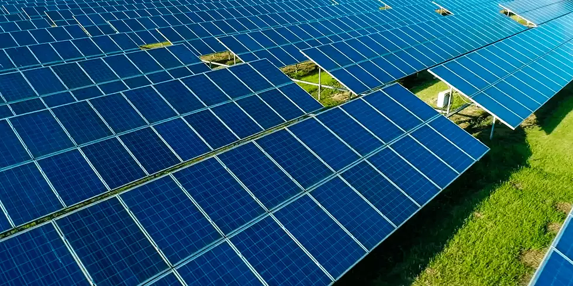

A energia renovável é aquela proveniente de fontes naturalmente reabastecidas, como a luz solar, o vento, a água e a biomassa. Ao contrário dos combustíveis fósseis, as energias renováveis são inesgotáveis e não emitem gases de efeito estufa durante sua produção. Essa forma de energia é essencial para combater as mudanças climáticas, promover a segurança energética e impulsionar o desenvolvimento sustentável. À medida que avançamos para um futuro mais limpo e sustentável, o investimento e a adoção de energias renováveis desempenham um papel fundamental na transição para uma economia de baixo carbono.
Clique aqui e faça o cadastro e faça parte de um mundo mais sustentável.
Tipos de soluções ofertadas pela EnergX

Energia solar
A energia solar é uma fonte renovável e limpa, proveniente da luz do sol. Através de painéis fotovoltaicos, ela é convertida em eletricidade, reduzindo a dependência de combustíveis fósseis e mitigando o impacto ambiental. Sua crescente adoção promove a sustentabilidade e impulsiona a transição energética global.
Energia Hidrelétrica
A energia hidrelétrica é gerada pela força da água em movimento, geralmente em rios ou quedas d'água. É uma fonte de energia renovável e limpa, que contribui significativamente para a produção de eletricidade em muitos países. A construção de usinas hidrelétricas pode impactar o meio ambiente, mas seu potencial como fonte de energia sustentável é inegável.
Energia Eólica
A energia eólica é obtida através da conversão da energia cinética do vento em eletricidade. Por meio de aerogeradores, que captam o vento e o transformam em energia mecânica e, em seguida, em energia elétrica, esse tipo de energia renovável desempenha um papel crucial na diversificação da matriz energética e na redução das emissões de carbono. Com baixos impactos ambientais diretos e custos cada vez mais competitivos, a energia eólica continua a crescer como uma importante fonte de energia limpa em todo o mundo.
Energia Biomassa
A energia biomassa é gerada a partir da matéria orgânica, como resíduos agrícolas, florestais ou até mesmo lixo orgânico. Essa biomassa pode ser queimada diretamente para gerar calor ou convertida em biocombustíveis, como o biodiesel ou o etanol, para produzir eletricidade ou combustível veicular. Além de ser uma fonte de energia renovável, a biomassa ajuda a reduzir a dependência de combustíveis fósseis e contribui para a gestão sustentável de resíduos, promovendo a sustentabilidade ambiental e energética.